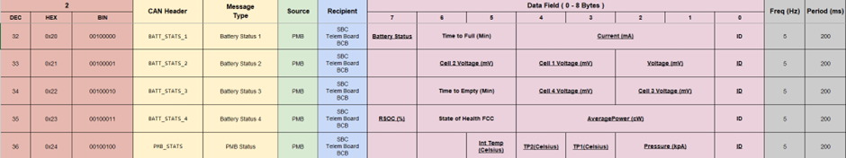

Acknowledgement
- Bumblebee Team, especially Elec Team to bounce idea with
- Zi Yang and Tan Chern Lin for providing feedback, Chen Jia Wei for troubleshooting. Marvin for giving the idea.
- Guk Yi Siong for helping in obtaining power consumption data
- Ananyan for validating my mechanical ideas
- Ms Annie, Patrick, KK, Graham
- Parker Schless from Cornell AUV for his advice when I faced problems
- Eugene for taking time to review the project and providing advice
- School for providing the lab, lab equipment and resources
- sponsors for helping the team also
List of Common Acronyms
| Acronym | Definition |
|---|---|
| ASV | Autonomous Surface Vessel |
| AUV | Autonomous Underwater Vehicle |
| BBAS | Bumblebee Autonomous Systems |
| BCB | Battery Charging Box |
| CAN | Controller Area Network |
| OCS | Operator Control Station |
| PCB | Printed Circuit Board |
| PMB | Power Monitoring Board |
| SoC | State of Charge |
1. Summary
TODO:
2. Problem Background
2.1 Introduction
Bumblebee Autonomous Systems (BBAS) is a student-led project team that designs and builds Autonomous Underwater Vehicles (AUVs) for the annual RoboSub competition. Following lessons learned from AUV4.1’s participation in RoboSub 2023, the team is concurrently developing AUV4.5 for RoboSub 2025 and AUV5.0 for RoboSub 2026 (Table 1).

Figure 1: AUV4.1 at RoboSub 2023
| Competition | Vehicles Deployed |
|---|---|
| RoboSub 2023 | AUV4.1 |
| RoboSub 2025 | AUV4.5 |
| RoboSub 2026 | AUV4.5 and AUV5.0 |
Table 1: AUV Deployments in RoboSub Competitions
AUV4.5 retains the same hull design as AUV4.1 but features a newly developed electrical and software subsystem. This new electrical subsystem is designed to be mechanically compatible with the existing AUV4.1 hull while also serving as the baseline for AUV5.0.
2.2 Current System
The current power system for the AUVs comprises two main components, the Battery Hull and the Battery Charging Box (BCB). Each Battery Hull houses a Power Monitoring Board (PMB) and a LiPo battery.
The PMB monitors and reports key telemetry data, such as the battery’s voltage, current, battery hull’s temperature and pressure, both on the screen and via the CAN Bus. Two such hulls are connected to power to the AUV. The waterproof designs allows for quick battery swap during pool test by eliminating the need to unseal the main vehicle hull.

Figure 2: Metal 3D-Printed Battery Hull

Figure 3: AUV4.1’s Power Monitoring Board

Figure 4: Assembled Battery Hull
The BCB comprises an AC-DC power supply and a LiPo charger. It includes connectors that interface directly with the battery hull, allowing the battery to be charged without removing it from the hull.

Figure 5: Battery Charging Box
2.3 Limitations of Current System
Deploying the current system at RoboSub 2023 identified several challenges.
2.3.1 Challenges with Battery Hull Sealing
The limited space within the battery hull and the need for a watertight seal, makes sealing and unsealing the hull a challenging and time-consuming process. Without error, unsealing takes 2 members approximately 10 minutes, while resealing requires another 15 minutes. However, the confined space often results in disconnected cables during assembly, further complicating the process. This overhead increase downtime and the risk of assembly errors.

Figure 6: Two Man Team Attempting to Seal a Battery Hull at RoboSub 2023
2.3.2 Limited Capabilities of Battery Fuel Gauge
The PMB currently uses BQ34110 chip as a gas gauge, which is designed for rarely discharged applications and lacks essential protection features [1]

Figure 7: Typical Li-Ion Discharge Voltage Curve [2]
<Insert Reference: https://www.ufinebattery.com/blog/useful-overview-of-lipo-battery-voltage/>
2.3.3 Challenges with Tracking Battery Hull’s Pressure and Temperature
During assembly, the battery hull is pressurised. Monitoring changes in pressure and temperature can alert the team to potential leaks. Currently, this tracking is done manually and only when a leak is suspected. his reactive approach limits the availability of historical data. Manual tracking can lead to missing data or recording error, reducing the effectiveness of leak detection.

Figure 8: Manually Logging Battery’s Hull and Temperature on the Battery Hull’s Lid

Figure 9: Manually Logging Battery’s Hull and Temperature on Excel
2.4 Problem Analysis
The limitations in the current system can be split into three overarching themes: poor user operability, limited runtime and reduced reliability. These themes and their associated limitations are summarised in Table 1.
| Category | Limitations |
|---|---|
| Poor User Operability | Challenges with Battery Hull Sealing |
| Challenges with Tracking Battery Hull’s Pressure and Temperature | |
| Limited Run Time | Limitation of Battery Fuel Gauge |
| Challenges with Battery Hull Sealing | |
| Poor Reliability | Limitation of Battery Fuel Gauge |
| Challenges with Tracking Battery Hull’s Pressure and Temperature |
Table 2: Categorisation of System Limitations
Poor user operability increases the likelihood of mistakes at competition, especially under time constraints or operator fatigue. Furthermore, limited run time can lead to less testing opportunities and ultimately impacting competition performance (Table 2, Table 3). Finally, poor reliability increases the risk of mid-run failures or unplanned maintenance, leading to increased downtime.
| RobotX 2022 | RobotX 2024 | |
|---|---|---|
| Testing Time in Singapore | 200 Hours | 330 Hours |
| Final Score (adjusted) | 1450 | 4450 |
Table 3: Table of Competition Results and Testing Time in Singapore
| Team | Final Score | Testing Time |
|---|---|---|
| NUS | 4450 | 49 Hours |
| KMOU | 2900 | 28 Hours |
| ERAU | 2250 | 33 Hours |
| Inspiration | 1600 | 25 Hours |
| NTU | 1050 | 17 Hours |
Table 4: Comparison of Final Score and Testing Time at RobotX 2024
3. Project Goal
As a competition team, the primary objective is to maximise vehicle performance at RoboSub. By enhancing user operability and ensuring safe operation, the PMB directly contributes to system reliability, allowing for more in-water testing, and ultimately better competition performance.
The project goal can be summarised as:
Hence, a three-Pronged approach wass used to guide the development of the PMB, with each sub-goal detailed in its respective section.
| Sub Goals | Section Number |
|---|---|
| Enhance User Operability and Work Flow | Section 8 |
| Improve Safety and Reliability | Section 7 |
| Improve AUV Performance | Section 6 |
Table 5: Sub Goals and Corresponding Report Section
4. Design Considerations
4.1 Backward Compatibility
As outlined in Section 2.1, AUV4.5 has the same mechanical structure as AUV4.1. As such, the new PMB must remain mechanically and electrically compatible with the AUV4.1 battery hull. This backward compatibility ensures minimal modification to the existing support infrastructure when using the new PMB. Furthermore, designing to meet AUV4.1’s specifications would also ensures forward compatibility with AUV5.0. This approach enables cross-platform use of the same PMB, reducing the need for custom variants and lowering the manufacturing cost by leveraging economies of scale.
To maintain backwards compatibility, the following constraints were identified.
| Characteristics | Constraints |
|---|---|
| Dimensions | The PMB and battery must fit within the internal volume of the AUV4.1 battery hull enclosure. |
| Electrical Interface | Existing connectors for power delivery and charging must be retained. |
Table 6: Design Constraints for Backward Compatibility
4.2 Functional Requirements
In addition to physical compatibility, the PMB must meet or exceed the technical performance of its predecessor. The following functional requirements were defined to ensure the board can support AUV4.1, AUV4.5 and AUV5.0.
| Technical Capabilities | Specifications |
|---|---|
| Voltage Output | 14.8V to 16.8V (4S) |
| Continuous Current | 40A |
| Communication Protocol | CAN2.0 |
| Telemetry | Voltage, Current, Internal Pressure, Internal Temperature displayed on the screen |
Table 7: Core Functional Requirements for PMB
The 40A current specification is based on the rated continuous current limit of the SubConn Low Profile Connector on the battery hull <Insert Reference https://www.macartney.com/connectivity/subconn/subconn-low-profile-series/subconn-low-profile-9-contacts/>. This provides sufficient headroom, as testing indicates a typical current draw of 11A per battery when moving at full-speed. CAN Bus is used for inter-board communication within the AUV, hence CAN bus integration is critical.
4.3 Component Standardisation
To reduce cost and simplify procurement, certain components of the PMB are shared with the other PCBs onboard the AUV. Specifically, the STM32F103C8T6 and the ISOW1044B isolated CAN Transceiver (Table 7). This standardisation reduces design effort and chance of error as the same schematic capture and layout can be reused across the PCBs. This also allows for easier spare preparation as the same component can act as spares for the different PCBs.

Figure 10: Common Schematic for STM32F103C8T6
| Component | Reason for Selection |
|---|---|
| STM32F103C8T6 | A widely used microcontroller that is onboard the “Blue-Pill” development board, ensuring high availability and supply stability. |
| ISOW1044B | Combines the isolated regulator and CAN transceiver into one single component, saving space onboard the PCB. |
Table 8: Reasons for the Components Selected for Standardisation
5. System Design
Provide a bigger picture first. Summary of the system design, will go into details below how everything work etc. (how the design of the PMB and BCB PCB can help to fulfil the project goal while meeting design considerations)
-
2x PMB Architecture -> surrounded by dotted lines
- Architecture should reference the PMB along with the different subsystem and external components
- Talk about the differnt Power and Grounds
- One is when connected in BCB
- Show how the power goes to charger
- CAN goes to PMB board
- PMB board powerd by USB-C
- Using Balance connector for programming pin
- Data Flow
- PMB -> CAN Bus -> ESP32 -> Telegram Bot -> Google App Script
- One is when connected to AUV
- Show that it communicate with CAN to AUV
- Power with connector
- Data Flow
- PMB -> CAN Bus -> SBC-CAN -> Serial -> SBC -> Ethernet to Router -> Data Uploaded Online
-
Using SystemPres, Relay and Reed Switch to turn on the vehicle
- Turn on is via reed switch activiating a relay
- Turn off is MCU detect reed switch and activate a signal
- Allows MCU to do whatever it needds to do before pwoering off.
6. Improving AUV Performance
One way to improve the AUV’s performance is by extending its run time. This allows for longer in-water test by reducing the interruption of changing batteries. This allows for continuos testing to simulate longer actual competition runs. Two methods were implemented to achieve this: renewing the current batteries and introducing accurate state-of-charge (SoC) estimation.
6.1 Battery Renewal
The batteries have been in use for over 2 years, with an estimated 200 cycles completed.

Figure XXX: Information on The Cycle Life of The Current Battery
Considering, that it is likely we will use the same battery hull for a few more years of competition, the batteries should be renewed to avoid more degradation.
Another factor in changing batteries is that we usually require 6 batteries for each AUV, organised into three sets of two: one set in use, one set charging, and one set kept as spares. Therefore, selecting cost-effective batteries can result in significant savings for the team.
| Specification | GrePow LiPo (current) | Raitan Li-ion | MaxAmp Li-ion |
|---|---|---|---|
| Configuration | 4S1P | 4S4P | 4S3P |
| Fit within the current battery dimensions? | Yes | Yes | Yes |
| Capacity | 15000mAh | 16000mAh | 15000mAh |
| Weight | 1355g | 1200g | 898g |
| Maximum Current Draw | 60A | 80A | 75A |
| Cost | SGD 320 | SGD 250 | SGD 451 |
Table XXXX : Table of Comparison for Batteries
Lithium-ion batteries were chosen for comparison due to its longer lifespan and higher energy density <Insert Reference https://www.unmannedsystemstechnology.com/feature/lipo-vs-lithium-ion-batteries-for-unmanned-robotics-applications/>. With its higher capacity and lower cost, the Raitan Li-ion battery was selected. Additionally, the team’s prior experience with Raitan provided confidence in the reliability and performance of their product.
Two Raitan Li-Ion batteries were procured for testing and compared with the current batteries.
| Specification | GrePow LiPo (current) | Raitan Li-Ion (New) |
|---|---|---|
| Dimensions | 190mm x 75mm x 42mm | 171mm x 77mm x 44mm |
| Mass | 1241g | 1179g |
| Time taken to draw 7A from fully charged to nominal voltage | 40 Minutes | 60 Minutes |
Table XXXX: Comparing GrePow LiPo Batteries with Raitan Li-Ion Batteries

Figure XXX: Voltage Drop over Time at 7A Constant Current Draw

Figure XXX: Photo of Grepow Battery (left) and Raitan Li-Ion Battery (Right)

Figure XXX: Photo of New Batteries in AUV4.1 Battery Hull
Raitan Li-Ion battery has been verified to be at least comparable to the GrePow LiPo battery making it a suitable replacement for the old batteries.
6.2 Accurate SoC Estimation
As mentioned in Section 2.3.2, the team previously relied on voltage to estimate the battery capacity. This approach tends to end tests prematurely, as conservative voltage thresholds fail to account for load and battery age. By utilising the gauging feature on battery management chip, we can determine a more accurate SoC, allowing in-water tests to run longer without risking battery damage.
6.2.1 Literature Review
Looking at RoboSub 2023 and RoboSub 2024 Teams’ Technical Design Report, only 2 other teams (Cornell University https://robonation.org/app/uploads/sites/4/2024/07/RS24_TDR_Cornell-compressed.pdf and The Ohio State University https://robonation.org/app/uploads/sites/4/2023/06/TDR_THEOhioStateUniversity_RS2023-compressed.pdf) developed a PMB with a battery gauge. The teams used the BQ40Z50 and BQ40Z80 chips from Texas Instruments (TI) respectively.
6.2.1 Justification for Chip Selection
Additionally TI, offers extensive community support on its forum and provides numerous resources guiding customers in using its chips (Figure XXXX, Figure XXXX, Figure XXX).

Figure XXX: Search Results of TI Forums

Figure XXX: TI’s YouTube Playlist on Battery Management

Figure XXX: Documents for BQ40Z50
Additionally, its software application “bqStudio” provides an easy interface with the chip (Figure XXX).

Figure XXX: Screenshot of bQStudio
To leverage on the huge amount of resources available and increase likelihood of success, a compatible chip from the TI family was shortlisted. Furthermore, being successfully implemented by multiple teams indicate that the chip has benefits.
| Feature | BQ34110 (Current) | BQ40Z50 (Proposed) |
|---|---|---|
| Battery Gauging Algorithm | Compensated End-of-Discharge Voltage | TI’s Impedance Track |
| Algorithm Comparison | - Inaccurate SoC after idle period - Affected by aged battery - |
- Remains accurate after idle - Resistant to ageing and temperature changes - Remains accurate at high level of discharge. - Lower error rate. |
BQ40Z50 was chosen as it supports up to 4-Series Li-Ion or LiPo Battery Packs. It also offers programmable protection features (Section XXXX) as well as Impedance Tracking and Cell Balancing (Section XXX). The chip is also able to track the number of cycles the batteries have been through. This reduces the need to guess when the batter capacity falls below a certain amount and hence prepare the operator to procure a new set of batteries.
Evaluation of SoC Accuracy
Hence, to evaluate the SoC accuracy, the new Li-Ion battery along with the PMB went through a learning cycle https://www.ti.com/lit/an/slua903/slua903.pdf?ts=1743852291712&ref_url=https%253A%252F%252Fwww.ti.com%252Fproduct%252FBQ40Z50.
When discharged at a constant current of 7A, the Voltage and SoC reported by BQ40Z50 was recorded (Table XXX). When using the LiPo battery, the team had a threshold of 15.2V (nominal voltage + 0.4V). Based on the chart, this would be roughly at 40% Depth of Discharge (DoD) (Figure XXX).

Figure XXX: Chart of Voltage and its Corresponding Capacity
If we were to do the same for the Li-Ion battery the threshold would be 14.8V. This would mean that the run would end before 65 minutes. However, by using SoC the vehicle would be able to run to at least 75 minutes, extending the run time by 15.4 %.
| Time (minutes) | Voltage (V) | Relative State of Charge Reported by BQ40Z50 |
|---|---|---|
| 0 | 16.5 | 100% |
| 10 | 16.03 | 93% |
| 20 | 15.91 | 86% |
| 30 | 15.45 | 74% |
| 45 | 15.18 | 67% |
| 55 | 15.94 | 59% |
| 65 | 14.68 | 51% |
| 75 | 14.4 | 45% |
Table XXX: BQ40Z50 SoC Reporting During Constant Current Discharge
The BQ40Z50 is also able to report the time taken to fully charge the batteries, and time taken to fully discharge the batteries. This time is calculated by the average power draw of the batteries.
| Case | Start Time | Starting Battery Voltage and SoC | Predicted End Time | Actual End Time | Time Difference |
|---|---|---|---|---|---|
| A | 8:20 PM | 16.42V, 84% | 9:30 PM | 9:10 PM | 20 mins early |
| B | 1:07 AM | 15.76V, 65% | 3:15 AM | 2:41 AM | 34 mins early |
This can be useful as it allows members to better plan and anticipate battery changes at pool tests. While the predicted end time tends to be conservative, this behaviour is preferable as it provides a useful buffer when planning battery swaps.
7. Enhance User Operability and Workflow
One part of the project is to enhance user operability and workflow. User operability can be improved by allowing for easier operation and maintenace of the battery hull, reducing AUV’s downtime. Improved workflow can help to identify potential issues and allow for early maintenance. Both user operability and workflow can come together to increase reliabilty of the vehicle.
Aim to make it easier for memerbs to oeprate and maintain vehicle to keep vehcile reliable despite long operation hours. Main goal is to reduce down time but icnreasing reliability. Help to prevent damage to battery hulls or vehicle. Prevent taking people away from development by fixing damges.
7.1 In-Hull Firmware Flashing
- Allows for flashing and update without opening hull
- Reduces error during reseasling, reduces downtime
- Tested during RobotX 2024 where a USB port was exposed on the ASV to allow for firmware flashing
- Few Option
- CAN Bus Flashing to allow for flashing via CAN
- Require higher overhead as you need a more expensive microcontroller
- Need build own bootloader
- Show old connector where CAN is alreaday exposed
- Use the original Balance Connector
- Explain that with the BQ40Z50 chip, balancing can be done with the chip, so balancing dont have to use charger to balance.
- Frees up the connector
- Reduce changes needed to be done
- Allows to expose the BQ chip comms also
- Explain that with the BQ40Z50 chip, balancing can be done with the chip, so balancing dont have to use charger to balance.
- CAN Bus Flashing to allow for flashing via CAN
- Insert image of old balance connector vs new balance connector
7.2 Remote Status Monitoring
- AS mentioned in xxx manual logging was used to track if battery hull is sealed
- Difficult to determine slow leak
- Upload relevant data online
- This provide historical data for operator to reference easily without unsealing the hull
- Can be useful for leak
- Or to track degradation of battery
- Or to track if cells are becoming unbalanced
- All of which should be rectified to ensure that AUV battery can function properly
- Few Option
- MCU with Wireless Capability
- Not suitable for Metal hull
- Accompanying PCB for BCB
- Same connector used to charge also hold the CAN Lines
- Able to connect CAN Line to the PCB to retrieve data from the BCB
- BCB would then be able to upload the data online
- Chose the BCB option as we dont need the PMB to have access to the internet all the time. This is as when it is turned on, it is sually connected to the AUV or the BCB. When it is connected to AUV it would have access to the Internet
- Insert diagram from interim report
- MCU with Wireless Capability
- While BCB means we need extra component, it is worth while as we can implement additional features (mentioned in section xxx) we can use it
- Especially since the PMB will be on only when conencted to AUV or BCB
- Go through BCB PCB design
- Powered with USB-C allow to power with the Charger itself (no need extra plug)
- Have ESP32 to get the CAN stuff and publish online with ESP capability
- Insert CAN Table
- 
- Talk about how it receive the CAN messages and use the Google App Script to Publish into its relevant scripts
- Test
- Simulated with Serial Communication with the computer
- Chose google sheet instead of database as it is easy for all members to use and track. Can even use on phone.
- current time obtained from NTP
- Can say that previously there was plan for local logging -> included in te design of the PMB
- As the data would be uploaded online by either the AUV or the BCB, there isnt really a need
- Accessing the local data is more troublesome as you have to unseal the hull.
- To ensure data accuracy there is a timeut for the stats
- If any stats dont come within 2x its reporting frequency the data is cleared and not reported to prevent posting outdated data
- Use a table to compare what is shown on the screen, what is reported to telegram and what is sent to google sheet
- Explain the differences (difference in purpose)
8. Improving Safety and Reliability
To improve safety and reliability of the system faults must be identified and rectified before it gets a chance to cause damage to a system. This can be done by identifying possible leaks of the battery hull and by implementing electrical protection feature to protect the vehicle from any possible electrical fault. Finally the design of the PCB must be able to support the power demand of the vehicle while keeping in mind good electrical practises to develop a reliable PCB.
8.1 Real-Time Safety and Status Notifications
As mentioned in Section 2.3.3, it might be difficult to identify Battery Hull leaks. To combat this, there should be automatic detection and notification of potential leaks to alert members to identify and rectify the issues.
8.1.1 Past Experiences
During the testing and development of the Autonomous Surface Vessel, a Telegram Channel was running on the ASV to periodically report the battery voltage and current draw. This proved invaluable as it help the team to anticipate and prepare for battery swaps. Furthermore, it helped the team to identify a load-balancing issue in the vehicle that would have otherwise gone unnoticed.

Figure XXX: Telegram Channel Reporting ASV’s Battery Status
8.1.2 Chosen Method
Hence, using Telegram Channel as a form of notification was chosen as it was tried and proven to be effective. Furthermore, as Telegram is used to communicate in the team, members would already have it installed on their devices, lowering the barrier of entry for using this system. By utilising a Telegram Channel also allows for multiple members to be notified of any issues. This reduces the chance of an alert being missed.
8.1.3 Implementation
When the data is sent from the BCB to the Google Sheet, the same Google App Script is used to check for the following conditions:
| Condition | Notification |
|---|---|
| Internal Pressure Below 107 | ALERT: PMB IS LEAKING! |
| Drop in the Ratio of Internal Pressure to Temperature > 0.5 | ALERT: PMB MIGHT BE leaking, please observe. |
Table XXX: Leak Detection Condition and Notification
The leak detection is based on the Gay Lussac’s Law <Insert Reference https://www.chem.fsu.edu/chemlab/chm1045/gas_laws.html >. This is as if the Battery Hull is not leaking the amount of gas in the hull should remain the same and hence the ratio of internal pressure to temperature should remain the same even if the temperature changes. Hence, if the ratio of internal pressure to temperature varies significantly, it is likely that there is a leak occurring.
To obtain the previous Internal Pressure to Temperature ratio, the Google App Script obtains the last recorded data for the PMB on the Google Sheet.
The threshold of 0.5 is determined by observing the change in temperature and internal pressure of three battery hulls.
| Pressure | Temp | P/T | P/T Difference |
|---|---|---|---|
| 110.30 | 24 | 4.596 | - |
| 110.38 | 25 | 4.415 | -0.181 |
| 110.45 | 27 | 4.091 | -0.324 |
| 110.52 | 27 | 4.093 | 0.003 |
| 110.58 | 27 | 4.096 | 0.002 |
| 110.71 | 28 | 3.954 | -0.142 |
| 110.80 | 28 | 3.957 | 0.003 |
| 110.85 | 28 | 3.959 | 0.002 |
Table XXX: Changes in Pressure and Temperature of Battery Hull A
| Pressure | Temp | P/T | P/T Difference |
|---|---|---|---|
| 112.49 | 24 | 4.687 | - |
| 112.54 | 24 | 4.689 | 0.002 |
| 112.59 | 25 | 4.504 | -0.186 |
| 112.63 | 25 | 4.506 | 0.002 |
| 112.67 | 25 | 4.507 | 0.002 |
| 112.75 | 25 | 4.510 | 0.003 |
| 112.80 | 25 | 4.512 | 0.002 |
| 112.85 | 26 | 4.340 | -0.172 |
Table XXX: Changes in Pressure and Temperature of Battery Hull B
| Pressure | Temp | P/T | P/T Difference |
|---|---|---|---|
| 111.88 | 24 | 4.662 | - |
| 112.04 | 26 | 4.309 | -0.352 |
| 112.10 | 28 | 4.004 | -0.306 |
| 112.16 | 28 | 4.006 | 0.002 |
| 112.23 | 29 | 3.870 | -0.136 |
| 112.34 | 29 | 3.874 | 0.004 |
| 112.43 | 29 | 3.877 | 0.003 |
| 112.47 | 30 | 3.749 | -0.128 |
Table XXX: Changes in Pressure and Temperature of Battery Hull B
By feeding various data into the BCB, we are able to simulate a leaking hull, leading to an alert sent to the Telegram Channel.

Figure XXX: Telegram Channel Reporting a Possible Leak in PMB2

Figure XXX: Telegram Channel Reporting a Leak in PMB1
The same Telegram channel is also used to broadcast the state of the battery charging and notifies members when it is fully charged. This feature addresses a common operational issue, where team members may forget to turn off the charger, especially after fatigue from a long day of pool tests. By receiving timely reminders, the team can ensure a safer operation by turning off the charger when the battery is fully charged.

Figure XXX: Telegram Channel Reporting a Fully Charged PMB1
8.2 Protection Features
- Used BQ40Z50 protection
- Protects against possible electrical fault -> increase system robustness
- Include literature review of hardware vs software safety
- Tested with COV, OC
- Tested both hardware and software limit
- Insert data and photo and excel
- also tested CUVC such that when the battery voltage is low and there is high current draw it will cut to protect the battery (to decide if I want to include this)
- explain that connector limit is 40A (insert reference to SubConn)
- While we have fuse, it is also good to have additional layer of protection
- also has a short circuit protection
- Tested both hardware and software limit
- protect battery and auv from further harm
8.3 PMB PCB Design
- Look at OneNote on PCB explanation
- Power Rating
- Show the load test
- show temperature picture
- Pool test show that it is around 11A per battery when moving at full spped
- To be safe, the test was done at 40A because it was the connector rating (include time spent running)
- Insert calculation for designs in appendix (refer to OneNote)
- Talk about the Current Draw and Oz of outer layer as well as trace width
- Show that it is 4 layer with split plane for the different Power
- Refer the SLUA on how to route
- Talk about the difference and similarity to SLUAA reccomendation
- Isolation
- Protection and noise especially for battery
- Look at Altium to see what each section does and how it ties to the design
- Go through mistakes that was in the PCB
- and list the possible improvement also
- Design for easy debugging
- Test Points
- Extra conector to test CAN Transmissions
- Switches to switch communication line
- Take a photo of PMB and highlight all the connections to show all the output and what it is connected to
- Power Consumption chart to spec the different voltage regulator
- Current draw of MCU and screen is 40mA
9. System Evaluation
- Basic Feature
- Refer to earlier table to see if able to meet all the requirements
- Able to be backward compatible -> can fit into old battery hull, can be turned on with reed switch, can charge, can discharge
- Able to report telemetry, able to draw, able to charge
- Verified reporting is accurate -> Voltage measured with multimeter
- Current is calibrated with a load tester drawing a constant load
- Discharging and Charging State of Battery Verified
- Improvements (use a before: after table)
- Run Time: Increased
- User Operability and Maintenace: 25 mins to 5mins to upload, constant logging
- Reliability -> able to detect leak immediately
- Have another table that compares old PMB and New PMB
- Interfaces
- Data Reporting
- Ease of use etc.
- Mistakes
- No Pull Down for Isolator Signal
- No pull up for I2C
10. Impact
- To be deployed at RoboSub 2025
- PCB Designed will be released to help other teams design their own PMB
- Internet connected BCB was not seen at RoboSub, with teams moving towards battery pods, this is something that can be useful for them
11. Future Work
- Test with the AUV
- Unable to do so due to limited hull and pool test
- Did not want to open and swap out the PMB as the hulls are old and notoriously hard to seal
- Was waiting for development of new hull to put the new pmb in
- Merge BCB into a Smart Charger
- Communciate with PMB to negoitate desired current and voltage
- Can get data directly from the charger also
- Better User Operability
- Using same connector for Balance Pin and Flashing
- works for previous PMB as it is connected to each other
- Does not work as thsi fried everything
- Future Work
- Change connector to something different so you dont accidentally misconnect
- More work and not interchangeable but its just crimp 1x so its not too bad
- should ahve integrated protection into the line
- clamping diode to prevent over 3v3
- diode to prevent reverse polarity
- Using same connector for Balance Pin and Flashing
12. Conclusion
- Move from Power Monitoring to Power Management
- Well Integrated system to deliver xxxx AUV for RoboSub
References
Appendix
- PCB Schematic and Routing
- Calculations
- Look at OneNote on PCB explanation
- BQStudio Configuration (Insert Link to the Page)